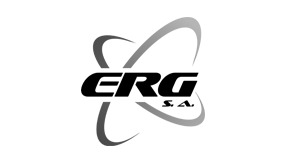

Firma Erg S.A pragnie wyrazić swoją pozytywną opinię na temat współpracy z firmą Polkoks Elektronics z Dąbrowy Górniczej. Firmy współpracują ze sobą w zakresie naprawy elektroniki w automatyce przemysłowej. Pomimo różnorodności urządzeń dostarczanych firmie Polkoks Elektronics , specjaliści oferują staranny zakres doradztwa i napraw. Najbardziej szanuję sobie szybkość otrzymania oferty handlowej naprawy, możliwość uzyskania odpowiedzi na wszystkie moje pytania oraz bardzo konkretną i miłą obsługę klienta.Istotnym elementem w czasie realizacji zamówień jest także gwarancja, jaką firma daje na naprawę.
ZGŁOŚ AWARIĘ
Jesteśmy firmą naprawiającą elektronikę. Jeśli potrzebujesz profesjonalnego, niezawodnego i szybkiego serwisu elektroniki przemysłowej, to nie czekaj dłużej! Skontaktuj się z nami i przekonaj się, dlaczego jesteśmy najlepsi. Nasza ekipa z przyjemnością odpowie na wszystkie pytania i pomoże Ci znaleźć najlepsze rozwiązanie dla Twojej firmy. czytaj więcej ->
Dlaczego warto nam zaufać?
Oferujemy:
- Profesjonalną pomoc
- Terminowość i szybki czas wykonania pracy
- Dbałość o jakość
- Indywidualne podejście do klienta
- Konkurencyjne ceny
Jak to działa?
WYSYŁASZ URZĄDZENIE
Wysyłasz urządzenie Kurierem do naszego Serwisu.
BEZPŁATNA DIAGNOZA
Przystępujemy do wstępnej bezpłatnej diagnozy.
OFERTA
Otrzymujesz ofertę naprawy.
REALIZACJA NAPRAWY
Zgodnie z umową przystępujemy do naprawy urządzenia.
WYSYŁKA DO KLIENTA
Odsyłamy naprawione urządzenie.
GWARANCJA
Gwarancja 12 miesięcy na naprawę.
Co naprawiamy?
- Falowniki
- Panele operatorskie
- Komputery przemysłowe
- Serwowzmacniacze
- Zasilacze impulsowe
- Sterowniki PLC
- Płytki PCB (drukowane)
- Monitory przemysłowe
- Pulpity sterownicze
Nasze pozostałe usługi:
Prace ślusarsko-spawalnicze
w ramach prowadzonej działalności wykonujemy wszelkie prace ślusarskie i spawalnicze oraz montażowe metodą spawania łukowego, elektrycznego, gazowego a także metodą MIG/MAG i TIG
Wymiana i naprawa rurociągów wodnych i kanalizacyjnych
W ramach świadczonych usług wykonujemy:
- konstrukcje stalowe (produkcja, montaż, likwidacja)
- remonty i przeglądy suwnic oraz czerpaków,
- remonty przenośników taśmowych, rolek i elektrorolek,
- remonty zsypnic i kruszarek młotkowych,
- remonty ciągów walcowniczych,
- wykonywanie i montaż ogrodzeń i bram ze stali kutej i profili,
Prace ogólnobudowlane
W ramach prowadzonej działalności wykonujemy wszelkie:
- prace remontowe i montażowe w pełnym zakresie,
- wykonywanie prac blacharsko-dekarskich,
- ocieplanie budynków,
- wykonywanie tynków zwykłych i akrylowych,
- wykonywanie instalacji budowlanych i sanitarnych,
- wykonywanie robót budowlanych wykończeniowych,
- wykładanie dróg, placów, chodników płytkami i kostką brukową.
Prace wyburzeniowe
wykonujemy całościowe działania związane z wyburzaniem obiektów oraz przygotowaniem terenu pod nową inwestycję. Sporządzamy dokumentację projektową, niezbędną do robót rozbiórkowych oraz uzyskujemy wszelkie pozwolenia na rozbiórkę. W naszej ofercie znajduje się również recykling materiału porozbiórkowego.
Remont maszyn i urządzeń
Montujemy i remontujemy maszyny i urządzenia mechaniczne i elektryczne w branży hutniczej oraz energetycznej z jednoczesnym świadczeniem usług obróbki skrawaniem metalu.
Prace kolejowe
polegające na wymianie torów, podkładów oraz remontów rozjazdów a także sygnalizacji ostrzegawczej.
Wykonywanie robót antykorozyjnych konstrukcji stalowych
- metodą czyszczenia strumieniowo ściernego.
Usługi transportowe
- pojazdami samochodowymi do 30 t.
Wykonujemy usługi ciągnikami siodłowymi typu Renault, Volvo, Skania przeznaczonymi do przewozu różnych konstrukcji jak również, materiałów sypkich i niebezpiecznych.
Usługi budowlane koparko-ładowarką
- Ł-34, Caterptiar, oraz podnośnikami montażowymi o wysokości podnoszenia do 27m.
Naprawy pojazdów samochodowych + blacharstwo i lakiernictwo
Obsługa samochodów ciężarowych oraz osobowych.
Prace leśne i przydrogowe
Wykonujemy prace związane z:
- pozyskiwaniem drewna z lasów i zalesianie
- prace związane z budową i eksploatacją napowietrznych linii energetycznych (eliminacja zadrzewiania na trasie linii) poprzez mechaniczne zrębkowanie
- zagospodarowanie terenów leśnych (zrębkowanie i rabatowanie obszarów pozrębowych)
- wykonywanie pasowego przygotowania gleby
- wykonywanie rowów przeciwpożarowych i melioracyjnych oraz nasadzeń
*Wszelkie prace wykonywane są przez wysokokwalifikowaną kadrę za pomocą profesjonalnego sprzętu. Celem firmy jest świadczenie wysokiej jakości usług po konkurencyjnych cenach.
**Wszelkie prace wykonujemy na podstawie umów uzgodnionych z inwestorami.
O nas
Szanowni państwo,
Misją naszej firmy jest wykonywanie usług, na jak najwyższym poziomie, w dziedzinie napraw, „remanufacturingu”, oraz odnowy urządzeń AUTOMATYKI PRZEMYSŁOWEJ, pracując szybciej, efektywniej, prościej.
Mamy nadzieję, że nasza oferta okaże się w przyszłości, jako najlepsza opcja spośród innych… My skupiamy się na rozwiązaniach. Nasz profesjonalizm rozwiąże Twoje problemy. Spełniając Twoje oczekiwania, generujemy niewspółmierne korzyści. Wiesz, że z Tobą tworzymy przyszłość…
Opinie

ERG SP. Z O.O
Dyrektor techniczny
★★★★★
SILA POLAND SP. Z O.O
Mistrz Utrzymania Ruchu
★★★★★
Mam przyjemność poinformować że firma Polkoks Elektronics Sp. z o.o z siedzibą w Dąbrowie Górniczej jest naszym partnerem w zakresie napraw urządzeń i części elektronicznych. Wieloletnia współpraca pozwala nam na stwierdzenie że Polkoks Elektronics jest firmą rzetelną, podejmującą się rozwiązywania najtrudniejszych problemów w zakresie napraw elektroniki przemysłowej. W pełni zasługuje na rekomendacje jako profesjonalny wykonawca powierzonych prac. .
JMP WÓZKI WIDŁOWE
Dyrektor techniczny
★★★★★
Śmiało mogę stwierdzić iż jako największa firma na Podlasiu zajmująca się sprzedażą, naprawą i wynajmem wózków widłowych i ładowarek teleskopowych, od kilku lat współpracujemy owocnie z firmą Polkoks Elektronics. Na przestrzeni tego czasu mogliśmy się wielokrotnie przekonać o profesjonalnym podejściu Pana Zbigniewa Pikuły do każdej naprawy, jak i do jej późniejszej trwałości, bo w przypadku elektroniki jest wiele firm które naprawiają, jednak nie licznym udaje się to zrobić tak by podzespół działał stabilnie po naprawie przez kolejne lata.
Zgłoś Awarię:
Masz problem z urządzeniem? Wypełnij poniższy formularz. Pomożemy Ci!